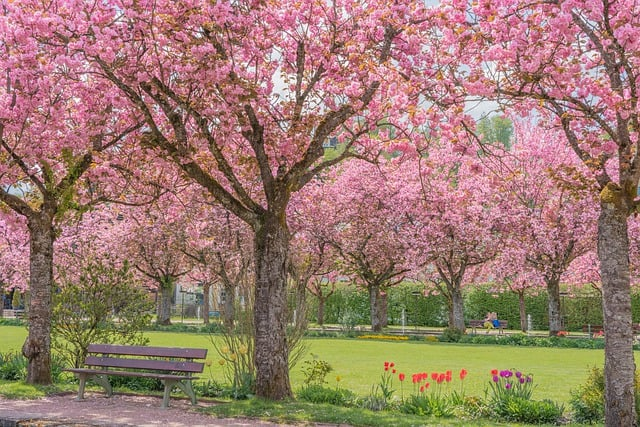
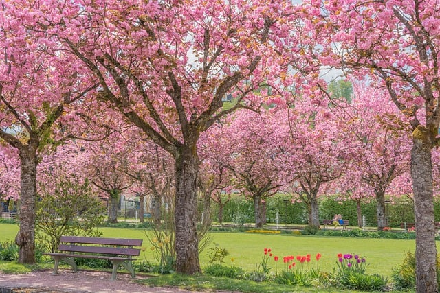
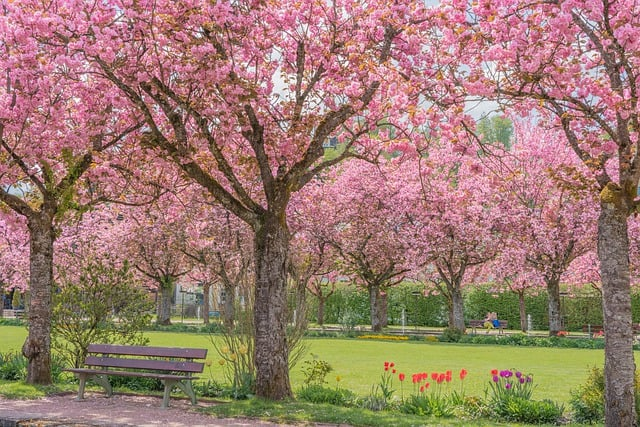

Головною подією, як для японців, так і для туристів звичайно є цвітіння сакури. Японці порівнюють цей момент із життям людини - воно настільки ж швидкоплинне і прекрасне як природа в ці 10 днів. Квітуча сакура є символом початку нового життя та відродження.

Період цвітіння сакури не є офіційним святом у Японії, але японці дуже полюбляють милуватися сакурою. Цей процес навіть має свою назву — о-ханамі (яп. 花見). Традиція милування сакурою киникла ще за доби Хейан (794-1185 рр.) і належела аристократам, але згодом до неї долучилися й інші жителі Японії.
Святкувати цвітіння сакури приходить велика кількість людей. Ця подія така короткочасна, кожен хоче бути побачити це диво. Тому парки, сквери, алеї, території буддійських та синтоїських храмів, де зазвичай збираються люди, матимуть багато відвідувачів протягом усього дня.
Зазвичай японці приходять сім’ями, або компаніями і влаштовують пікнік під квітучою вишнею.
Велика увага приділяється їжі. Це бенто (їжа з собою), різноманітні традиційні японські страви, серед яких найчастіше зустрічається онігірі - зліпленний у вигляді трикутника або кулі рис із начинкою і обернений у лист водоростей норі.
Відвідуючи будь-які масові заходи - обов’язково потрібно прибирати все своє сміття. Таким чином Ви покажете свою повагу до японців та до країни.
Цвітіння сакури триває близько 10 днів і часто залежить від погоди. Для того, щоб встигнути побачити це явище потрібно просто “загуглити”. Наприклад, у Саппоро цвітіння сакури відбуватиметься з 23 квітня по 1 травня.
Слід також розуміти, що цвітіння сакури може проходити у різних регіонах Японії у різний час. Тому, якщо Ви не встигли на ханамі, то це можна зробити у іншому регіоні країни.